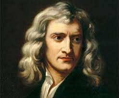

Biografia
Isaac Newton nació el 25 de diciembre de 1642 en Woolsthorpe, Lincolnshire, Inglaterra. Era el hijo menor de una familia de campesinos y fue criado principalmente por su abuela materna después de que su padre muriera poco antes de su nacimiento y su madre se volviera a casar y tuviera más hijos.

A pesar de que Newton no tuvo una educación formal muy temprana, demostró ser un estudiante excepcional y a los 19 años ingresó en el Trinity College de la Universidad de Cambridge. Allí se dedicó a estudiar las matemáticas y la ciencia y se convirtió en uno de los estudiantes más destacados de la universidad.
En 1665, la Universidad de Cambridge se cerró temporalmente debido a la epidemia de peste bubónica y Newton regresó a Woolsthorpe. Durante este tiempo, hizo algunos de sus mayores descubrimientos científicos, incluyendo sus leyes del movimiento y la ley de la gravitación universal. También desarrolló el cálculo infinitesimal, una herramienta matemática esencial para entender y describir el mundo físico.
En 1667, regresó a la Universidad de Cambridge y se convirtió en profesor de matemáticas. En 1669, fue elegido para el puesto de Lucasiano, una posición de prestigio en la universidad que había sido ocupada anteriormente por personas como Galileo Galilei y Blaise Pascal.
A lo largo de su vida, Newton hizo muchos otros importantes descubrimientos científicos y matemáticos. También tuvo una gran influencia en la filosofía y la teología de su época y era un hombre muy religioso. Creía que la ciencia y la religión eran complementarias y que el conocimiento de la naturaleza era un medio para conocer a Dios.
Newton también hizo importantes aportes a la óptica, demostrando que la luz blanca es una mezcla de colores y que las lentes pueden descomponer la luz en colores y recombinarla para crear imágenes. También hizo importantes aportes a la química y la alquimia.
En 1687, publicó su famoso libro "Philosophiæ Naturalis Principia Mathematica", en el que presentó sus leyes del movimiento y la ley de la gravitación universal. Este libro es considerado uno de los trabajos científicos más importantes de la historia y tuvo un gran impacto en la forma en que entendemos el mundo.
Isaac Newton falleció el 20 de marzo de 1727 en Kensington, Inglaterra.